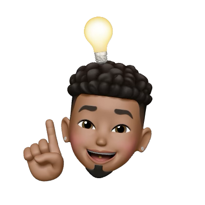
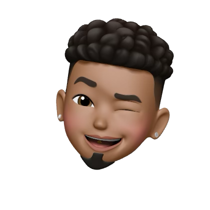
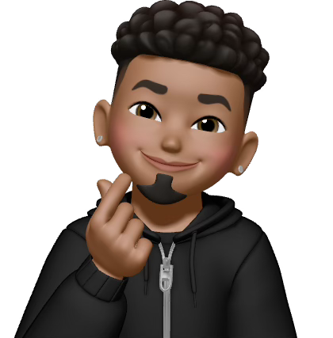

Firmeza.
Ventas e inventario con tienda para clientes: catálogo, carrito, control de existencias y comprobantes por correo. Incluye pruebas y Docker.
React 19API .NET 10PostgreSQL

Full Stack Developer
Del botón en React a la base de datos.
Proyectos destacados
Ventas e inventario con tienda para clientes: catálogo, carrito, control de existencias y comprobantes por correo. Incluye pruebas y Docker.
Inscripciones a talleres presenciales: control de cupos, cruces de horario, inscripción masiva desde Excel y certificados en PDF.
API para gestionar proyectos y tareas, donde cada usuario ve solo su trabajo. Tiene pruebas unitarias y de integración, y despliegue a Azure con GitHub Actions.
API para buscar canchas, administrar sedes y gestionar reservas, con roles y búsqueda por ubicación.
API de tareas diseñada para Azure App Service y Azure SQL con identidad administrada.
Sistema web de gestión académica para asignar aulas y horarios, evitando sobrecupos y cruces de asignaturas con validaciones transaccionales.
Reconocimiento de expresiones faciales en tiempo real desde la cámara web. Hecho junto a Juan Benavides.
Backend
C#, Java, ASP.NET Core, EF Core, LINQ, JWT, Swagger / OpenAPI, xUnit
Cómo trabajo

Frontend
React, Next.js, TypeScript, JavaScript, Vite, Tailwind CSS, Bootstrap, Jest, React Testing Library, HTML, CSS
Datos y nube
PostgreSQL, MySQL, Docker, GitHub Actions, Azure, Linux, Git, Postman
Ahora

Entorno corporativo de práctica y desarrollo ágil · Barranquilla, Colombia
2023 – 2025
Diseñé e implementé endpoints con Java y Spring Boot, reduciendo tiempos de respuesta y desacoplando la lógica de negocio para las aplicaciones cliente.
Modelé bases de datos en MySQL y construí consultas complejas, procedimientos almacenados y transacciones ACID para proteger la integridad de los datos en operaciones críticas.
Apliqué Clean Code y participé en revisiones de código en GitHub, reduciendo deuda técnica y facilitando la cobertura de pruebas.
Participé en Scrum (sprints de 2 semanas, dailies y retrospectivas), entregando incrementos funcionales a tiempo.
Elige una tecnología para ver dónde la usé.
Ventas e inventario con tienda para clientes: catálogo, carrito, control de existencias y comprobantes por correo. Incluye pruebas y Docker.
Inscripciones a talleres presenciales: control de cupos, cruces de horario, inscripción masiva desde Excel y certificados en PDF.
API para gestionar proyectos y tareas, donde cada usuario ve solo su trabajo. Tiene pruebas unitarias y de integración, y despliegue a Azure con GitHub Actions.
API para buscar canchas, administrar sedes y gestionar reservas, con roles y búsqueda por ubicación.
API de tareas diseñada para Azure App Service y Azure SQL con identidad administrada.
Sistema web de gestión académica para asignar aulas y horarios, evitando sobrecupos y cruces de asignaturas con validaciones transaccionales.
Reconocimiento de expresiones faciales en tiempo real desde la cámara web. Hecho junto a Juan Benavides.

2026 – Actualidad
Especialización en Desarrollo Backend
Clean Architecture, ASP.NET Core, APIs empresariales, Entity Framework, SOLID, pruebas unitarias y Azure (Entra ID, App Services).
2025 – Actualidad
Ingeniería de Sistemas
2022 – 2025
Tecnólogo en Análisis y Desarrollo de Software (ADSO)

Soy desarrollador Full Stack y estudiante de Ingeniería de Sistemas en Unisalamanca, con especialización en Backend en Riwi. Me gusta convertir requisitos complejos en software claro y bien estructurado.
Trabajo con Clean Architecture y principios SOLID. Ahora estoy aprendiendo sobre Azure, pruebas y CI/CD. Fuera del código, soy fan del universo cinematográfico de Marvel.
Español nativo · Inglés intermedio

¿Tienes un proyecto o una oportunidad? Escríbeme.
cmoralesavendano6@gmail.com
Comparte tu experiencia. Al enviarlo, será visible para todos.